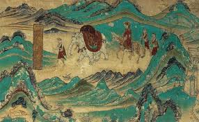
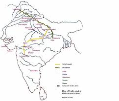
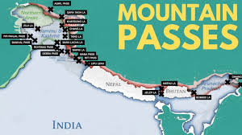
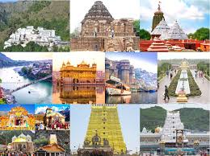

Social Studies
Motivations for Traveling to India in Ancient Times
1. Trade and Commerce
- India was a major trading hub, known for its spices, textiles, precious stones, and metals.
- Silk Road, Incense Route, and Maritime Spice Route connected India to the Mediterranean, Southeast Asia, and the Arabian Peninsula.
2. Religious Pilgrimages
- India attracted pilgrims for Hindu, Buddhist, and Jain religious sites.
- Key destinations: Varanasi, Bodh Gaya, Kashi, and Shatrunjaya.
3. Scholarly Pursuits
- Ancient universities like Nalanda and Takshashila drew intellectuals from across the world.
- Indian philosophy, mathematics, astronomy, and medicine were major fields of study.
4. Political and Diplomatic Relations
- Empires like the Mauryas had diplomatic ties with Greek, Persian, and Central Asian powers.
- Ambassadors and envoys, such as Megasthenes, visited India to form alliances.
5. Military Campaigns
- Invaders like Alexander the Great entered India through the Khyber Pass.
- India also faced incursions from the Persians and Turks.
6. Cultural Exchange
- India influenced regions like Southeast Asia, especially in art, architecture, and religion (e.g. Buddhism spread to China).
7. Medicine and Healing
- Ancient Ayurveda and surgical techniques drew travelers for treatment and knowledge.
8. Adventure and Exploration
- Herodotus and others were fascinated by India’s culture, wildlife, and diversity.
9. Seeking Divine Favor or Fortune
- Pilgrims and travelers came for mystical experiences and spiritual benefits.
10. Escape from Persecution
- Religious groups (e.g., early Buddhists) sought refuge in India from persecution.
Routes to Reach India and Geographical Features
1. Overland Routes:
Silk Road:
Indo-Iranian Route:
Deccan and Peninsular Routes:
2. Maritime routes:
Indian Ocean Trade Network:
Bay of Bengal and Southeast Asia:
Strait of Malacca:
Geographical Features Favoring Travel:
Coastlines and Ports:
Mountain Passes:
Rivers:
Climate and Agriculture:
Key Historical and Trade Routes:
Grand trunk Road:
Maritime Spice Routes:
These points highlight India's significant role as religious, cultural, economic, and intllectual hub in ancient times, with diverse routes facilitating travel to and from the continent.




Home